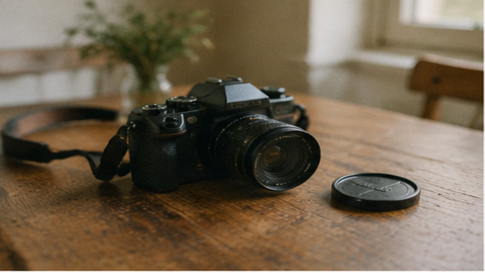
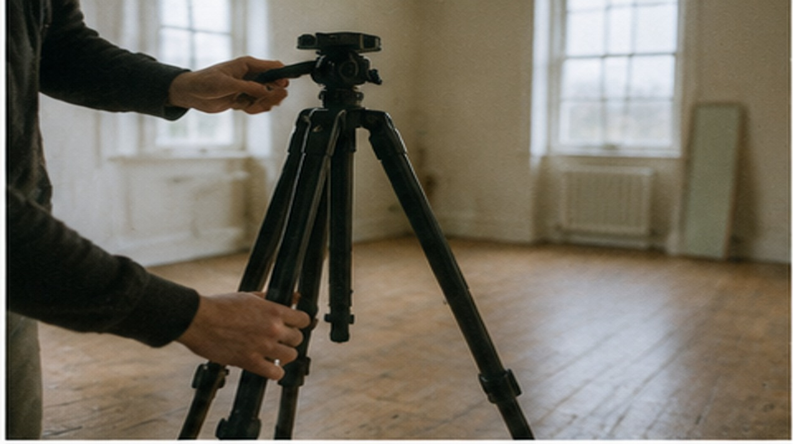
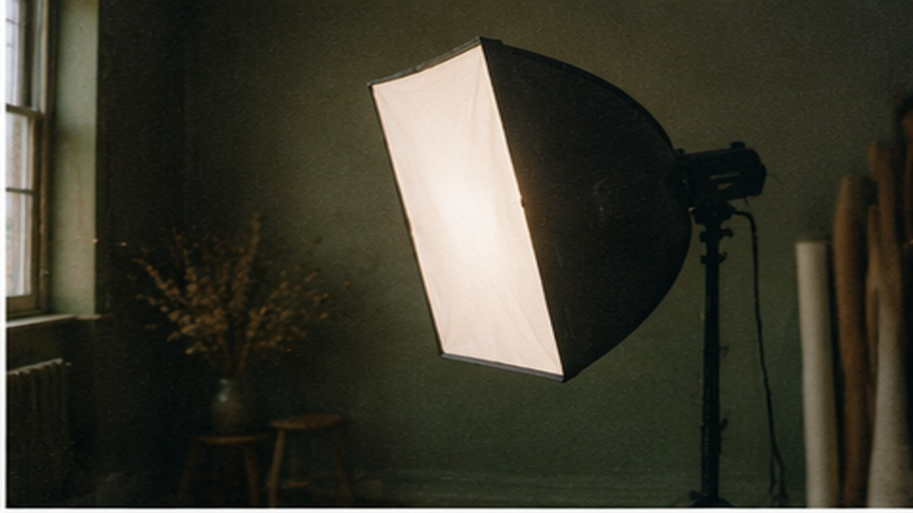
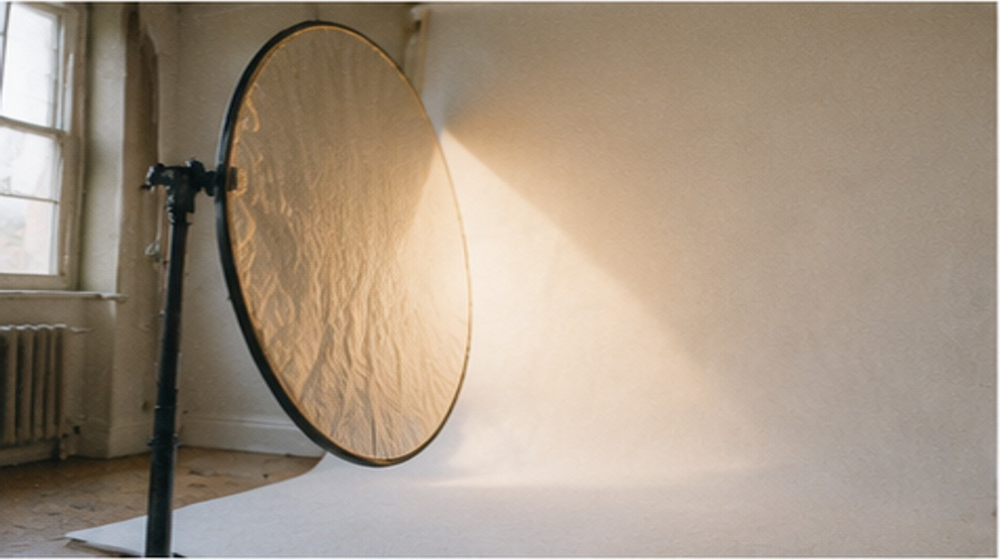
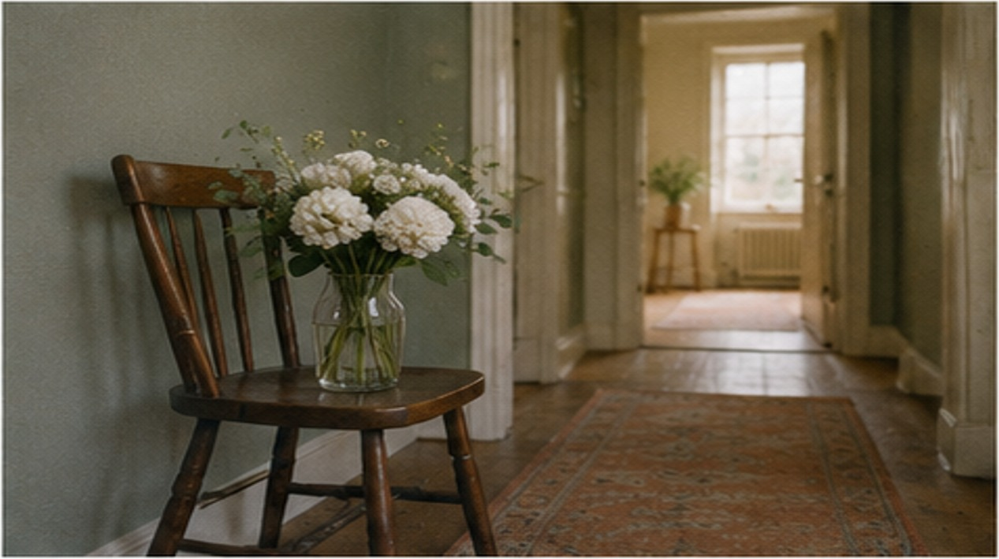
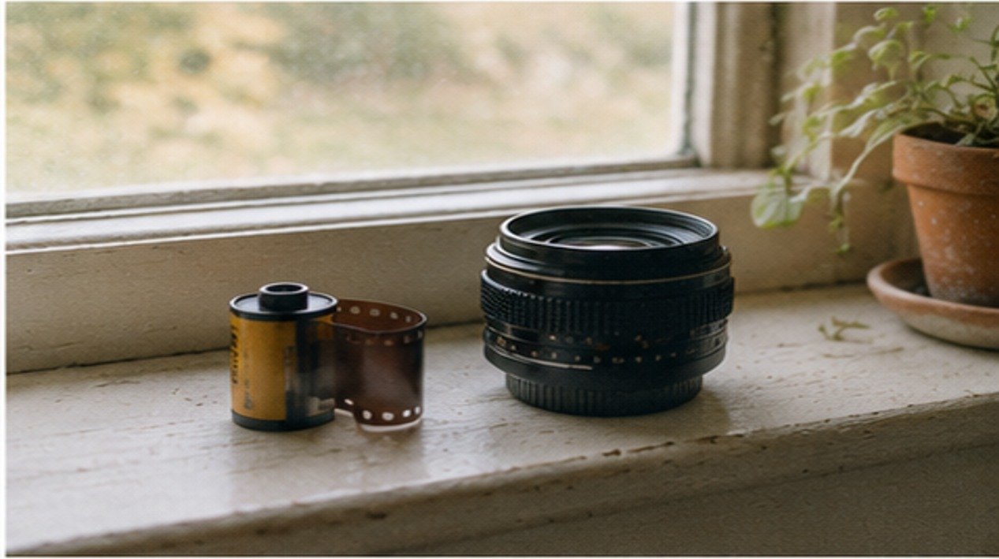
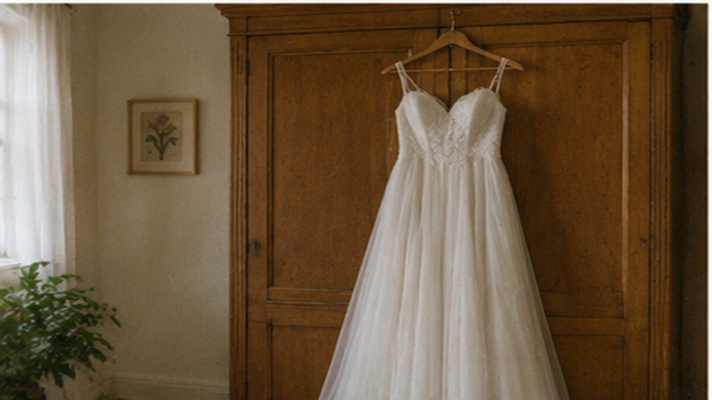
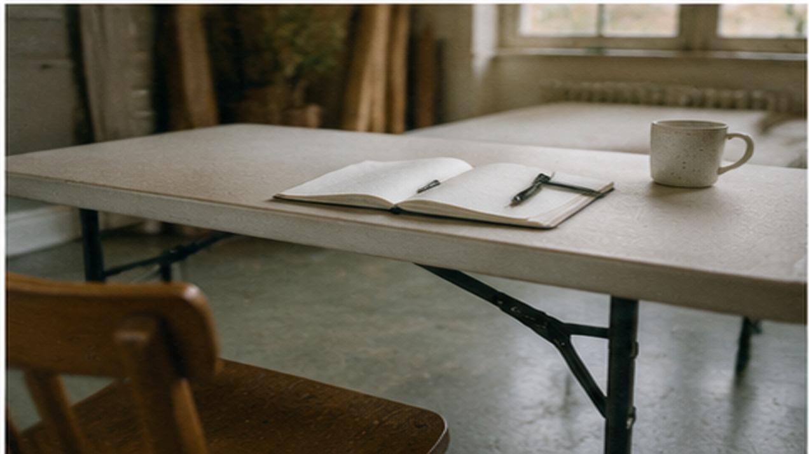
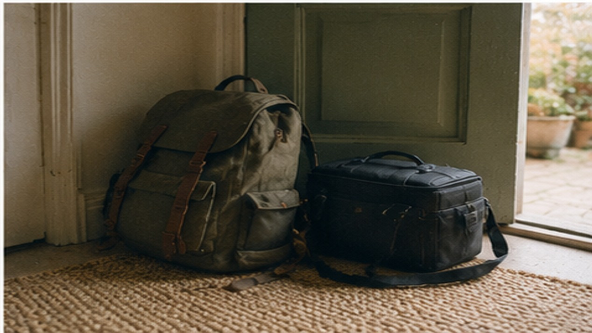

GUANGZHOU · PORTFOLIO
林小满
接得住活动，也拍得住日常
独立摄影师，接人像、婚礼跟拍和品牌短片。约拍前先聊清楚要什么、成片什么时候要，档期提前两周约。
关于我
拍人像七年，从证件照到婚礼跟拍。最常被夸的是「你拍的照片像本人」，不是把脸修成另一个人。
常驻广州，可以约影棚，也可以带上灯上门。外地客户走远程沟通，成片先给预览再定稿。
只接能拍好的活：光线不行、时间不够、要的效果超出成片能力的，我会直说。
GUANGZHOU · PORTFOLIO
接得住活动，也拍得住日常
独立摄影师，接人像、婚礼跟拍和品牌短片。约拍前先聊清楚要什么、成片什么时候要，档期提前两周约。
拍人像七年，从证件照到婚礼跟拍。最常被夸的是「你拍的照片像本人」，不是把脸修成另一个人。
常驻广州，可以约影棚，也可以带上灯上门。外地客户走远程沟通，成片先给预览再定稿。
只接能拍好的活：光线不行、时间不够、要的效果超出成片能力的，我会直说。
影棚日常、人像和婚礼跟拍。以下是演示素材，人物与联系方式均已脱敏处理。








